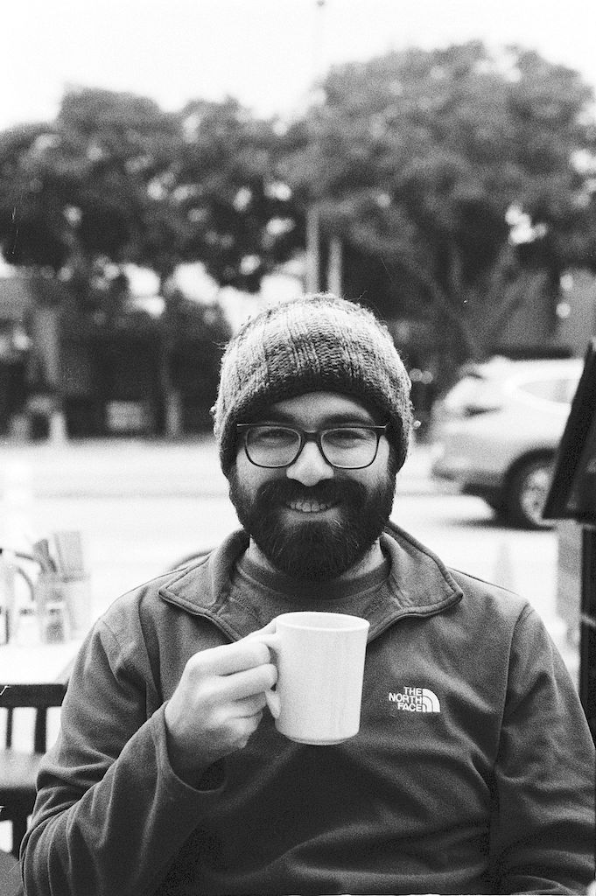
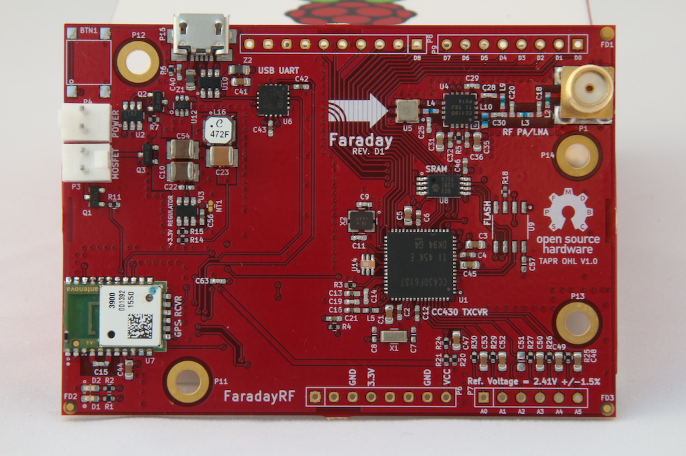

|  |
I'm Bryce Salmi, an Electrical Engineer in Los Angeles, CA. I've been working in the Aerospace industry for nearly ten years designing electronics that fly on orbital class launch vehicles and satellites. You can view my LinkedIn profile for more professional information. This website is a collection of select personal and professional projects relevant to my career. Where possible I will include information regarding professional projects keeping NDA/proprietary information excluded. It is also source controlled on GitHub and uses the Digital Ocean app deployment system to host. Relativity SpaceTerran 1 Aeon Engine AvionicsBoth projects can be seen operating in the embedded tweet during a test first of Terran 1 Mission 1 first stage.Aeon 1 Engine ControllerOne of my main projects as an individual contributor at Relativity Space was to design and build the Aeon 1 engine controller. This controller is a Remote Input/Output device that provides telemetry from engines as well as solenoid actuation. I designed a microcontroller and digital communications architecture which implements several ADC/DAC ICs providing various analog interfaces and solenoid control. This controller is also used as a stage controller and payload controller capable of pyrotechnic deployment. It combines five traditional avionics boxes into one box with a single easy to manufacture PCBA. Aeon 1 Thrust Vector ControllerIn mid-2021 I became the Responsible Engineer for the Thrust Vector Controller, a 300V three-phase Field Oriented Control (FOC) traction motor. This controlled an electric linear actuator which gimbals the engine in order to control the thrust vectors necessary to control the launch vehicle all the way to orbit. While I had to be extremely familiar with Field Oriented Control, a dedicated firmware engineer was responsible for designing the control algorithms.
FaradayRFFaraday Digital TransceiverMy twin brother and I started a small business called FaradayRF which aimed to bring newer digital radio technology to amateur radio. Our fundamental goal was to provide some inspiration to using newer technology, embracing higher frequencies, and computer interfaces using modern tools. Our FaradayRF GitHub project hosts all the repositories (more than what's shown here). Both of us joined startups in 2018 and realized we could not spend the time running the project anymore. 900 MHz RF TransceiverThe open source hardware was developed using the KiCad EDA and all source files are located on the GitHub FardayRF-Hardware repository. The transceiver uses a Texas Instruments CC430 IC and communicated to the computer over a serial link. Effort was made to keep the design low-cost and simple. More than 100 transievers were manufactured.  |